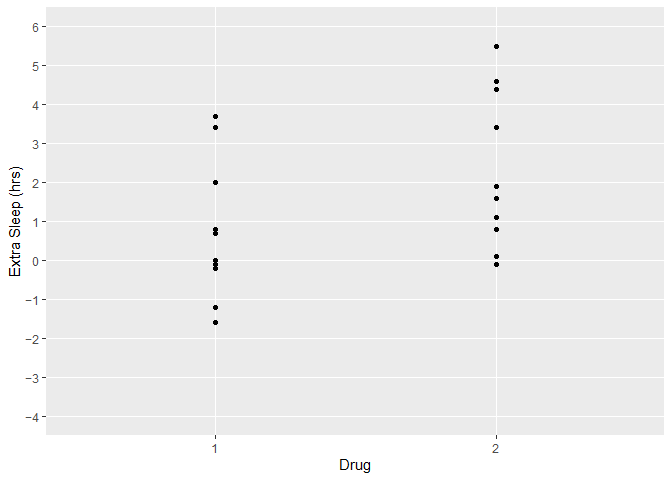
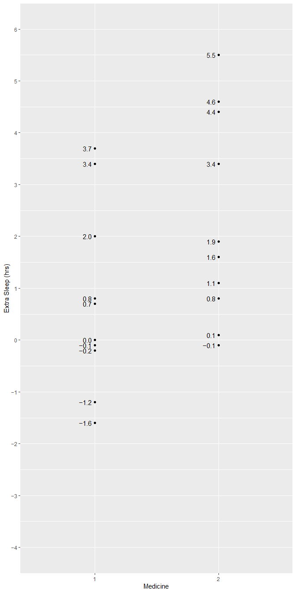
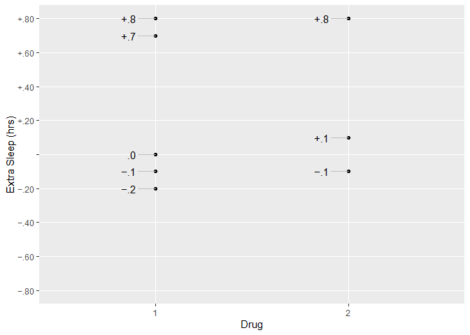

signs makes it easy to use typographically accurate minus signs in plots, markdown, dashboards, or other displays.
Ask any typography nut, and they can walk you through the differences among 4 glyphs that look almost alike:
- the hyphen-minus (-, ASCII 45)
- the en-dash (–, Unicode 2013)
- the em-dash (—, Unicode 2014)
- the true minus (−, Unicode 2212)
The en-dash and em-dash are named after their widths (the width of an n and m, respectively). The true minus is the width of a digit and sits a bit higher than the others. The hyphen-minus, an ASCII convention, is the only one we get on our keyboards.
These may be easier to distinguish in some fonts than others. In most fixed-width coding fonts, for example, they’re nearly (if not totally) indistinguishable. But a good font for plotting will usually have a different glyph for each.
For me, using a true minus is like brewing high-end tea or wearing my favorite socks. Maybe nobody else notices, but it still feels good to me. If you feel the same way, this package may grow on you!
Installation
signs is not yet available on CRAN. You can install it from GitHub with:
# install.packages("devtools")
devtools::install_github("BenjaminWolfe/signs")Examples
Using signs is simple, especially if you’re familiar with functions like number(), number_format(), comma(), comma_format(), percent(), and percent_format() from the scales package. The package adds 2 functions analogous to these: signs() and signs_format().
Fixed-Width Fonts (indistinguishable)
As mentioned above, the difference is hard to see with a fixed-width typeface. That’s not a problem with the package; it’s just how these fonts work.
Plots
We can see the difference in a plot. First, with scales::number():
library(ggplot2)
p <-
ggplot(sleep) +
aes(group, extra) +
geom_point() +
xlab("Medicine") +
ylab("Extra Sleep (hrs)")
p +
scale_y_continuous(
limits = c(-4, 6),
breaks = seq(-4, 6),
labels = number
)Now with signs::signs():

p +
scale_y_continuous(
limits = c(-4, 6),
breaks = seq(-4, 6),
labels = signs
) +
geom_text(
aes(label = signs(extra, accuracy = .1)),
nudge_x = -.025,
hjust = "right"
)
p +
scale_y_continuous(
limits = c(-4, 6),
breaks = seq(-4, 6),
labels = signs_format(add_plusses = TRUE)
) +
geom_text(
aes(label = signs(extra, add_plusses = TRUE, accuracy = .1)),
nudge_x = -.025,
hjust = "right"
)p +
scale_y_continuous(
limits = c(-1, 1),
breaks = seq(-1, 1),
labels = signs_format(add_plusses = TRUE, blank_at_zero = TRUE)
) +
geom_text(
aes(label = signs(extra, add_plusses = TRUE, trim_leading_zeros = TRUE, accuracy = .1)),
nudge_x = -.025,
hjust = "right"
)
#> Warning: Removed 12 rows containing missing values (geom_point).
#> Warning: Removed 12 rows containing missing values (geom_text).